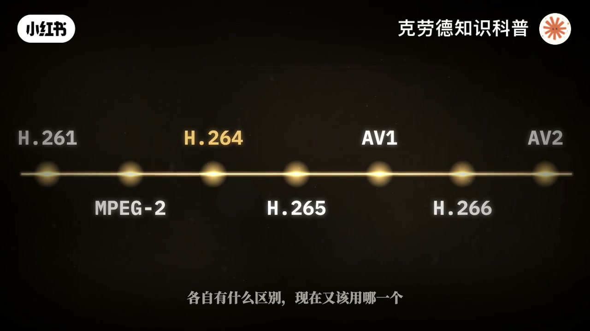
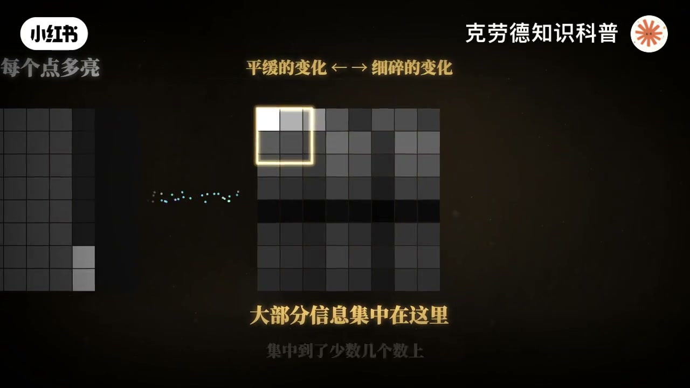
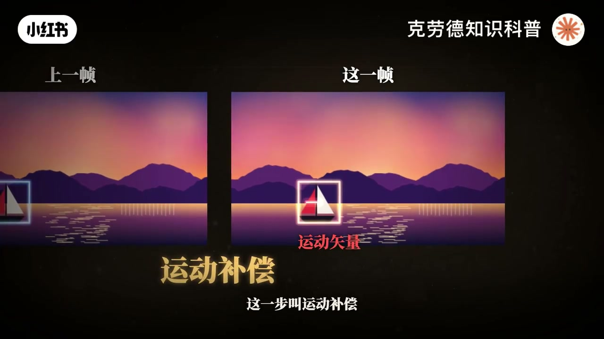
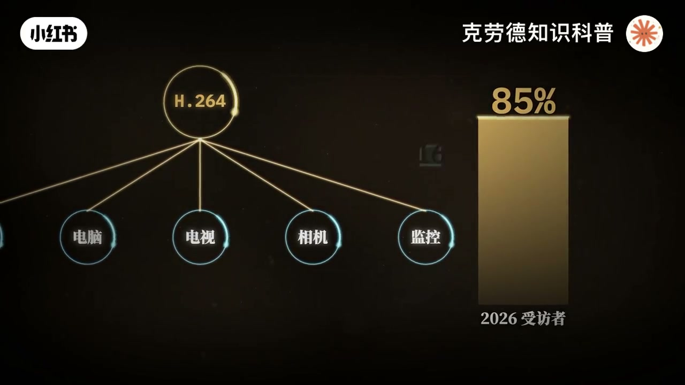
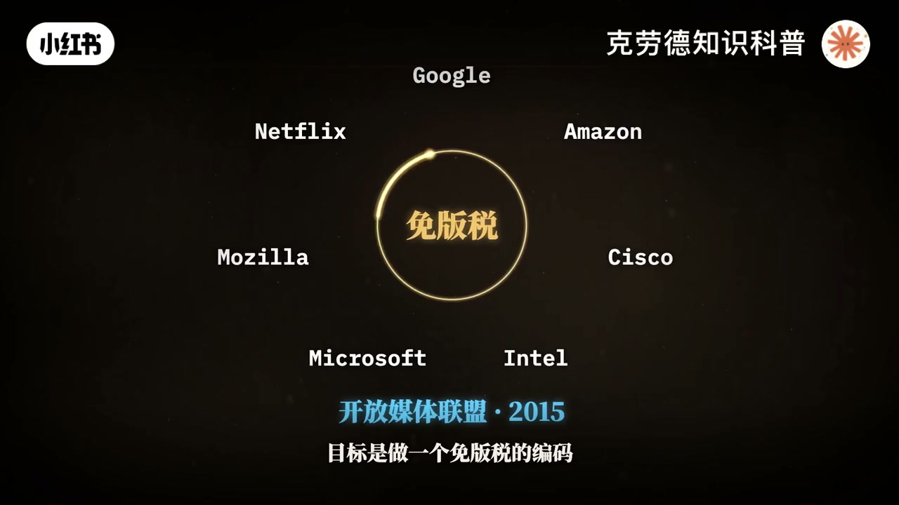
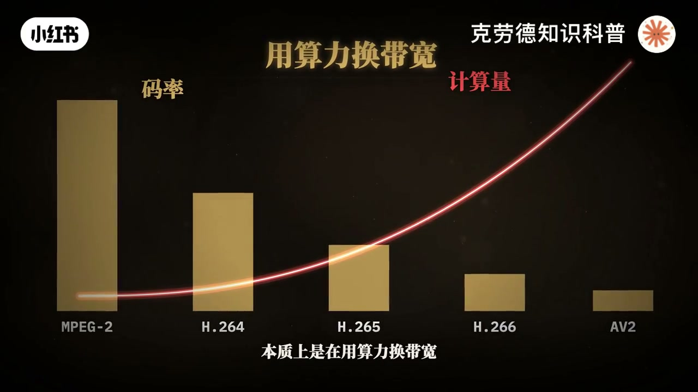
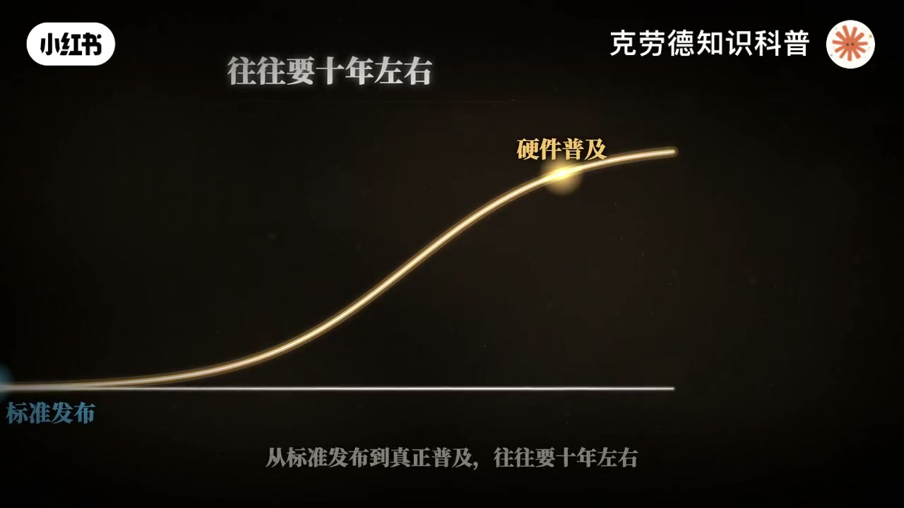

内容要点
讲透视频压缩原理与 H.264/H.265/AV1 三代标准：四种冗余如何被压缩、单帧五步流水线、40 年标准演进（每 10 年码率减半），以及拍摄/剪辑/导出/存档该选哪个编码。
知识结构
视频能被压缩，靠的是空间、时间、视觉、统计四种重复；单帧压缩从 1988 年至今都是切块→预测→变换→量化→熵编码五步。
标准由 ITU 与 MPEG 两个组织制定；从 H.120、H.261、MPEG-1/2 到 H.264 称霸，再到 H.265 专利混乱逼出免版税的 AV1。
拍视频的编码分发布、剪辑、RAW 三类；MP4/MOV/MKV 只是容器。2026 年调查里 H.264 仍占 85%，未来最想用的是 AV1。
视频压缩本质是用算力换带宽。选格式不只看压缩率，更要看硬件解码与专利是否清楚：H.264 兼容最稳、H.265/AV1 更省流量、剪辑用 ProRes/全帧内、存档留高码率原素材。
00:00–05:04压缩原理：四种冗余 + 单帧五步流水线
视频之所以能压上百倍，是因为里面全是重复：空间重复（蓝天相邻像素几乎一样）、时间重复（相邻帧大部分没变）、视觉冗余（人眼对细纹理不敏感）、统计重复（常见数字用短编码）。压缩分无损与有损，视频几乎都用有损，主动丢掉信息换压缩比。单帧编码从 1988 年至今都是五步：切块（H.264 基本单位是 16×16 宏块，新格式最大 128×128）→ 预测（按方向猜这一块，只存残差，H.264 有 9 种方向、H.265 35 种、H.266 67 种）→ 变换（离散余弦变换，把像素转成频率描述）→ 量化（真正丢信息的一步，码率高低主要调这里）→ 熵编码（H.264 引入 CABAC 能再省约 10%）。更大的压缩来自时间：编码器在上一帧找最像的位置只存一个运动矢量，帧分 I/P/B 三种，从 I 帧到下一个 I 帧为一组 GOP——这也是长 GOP 素材拖进剪辑软件会卡的原因。码率分配有固定码率、可变码率、恒定画质（CRF）三种。



05:04–09:3240 年标准演进：从 H.120 到 AV1/VVC/AVS3
标准由国际电联 ITU（管通信）与国际标准化组织 MPEG（管媒体）制定，时而各自为政、时而联手。1984 年 H.120 几乎不能用；1988 年 H.261 为视频会议而生，奠定切块+运动补偿+变换编码的骨架；MPEG-1 加入 B 帧成就 VCD；MPEG-2（H.262）撑起 DVD 与数字电视。2003 年 H.264（AVC）以一半码率称霸，靠的是生态与集中在单一专利池的收费。2013 年 H.265（HEVC）更省一半，但专利分散在三个池、算不清该交谁；这直接逼出 2015 年开放媒体联盟与 2018 年免版税的 AV1（块更大、可分离胶片颗粒），比 H.265 再省 10–20%。其后还有 H.266/VVC、2026 年发布的 AV2，以及中国的 AVS3。


09:37–13:15现实怎么选：发布 / 剪辑 / RAW 三类编码
拍视频的编码分三类：发布用（H.264/H.265，省空间但剪辑吃力）、剪辑用（ProRes、DNxHR，全帧内好剪但文件大）、RAW（N-RAW、ProRes RAW、Blackmagic RAW、REDCODE，压的是传感器原始数据）。MP4/MOV/MKV 只是容器，换容器不损画质。2026 年行业调查：生产环境 H.264 85%、H.265 58%、AV1 19%、H.266 5%，而未来一年最想采用的是 AV1（35%）。选型建议：拍摄空间够就选高码率、重度调色选 10bit；剪辑卡就转 ProRes 或生成代理；导出 H.264 兼容最稳、H.265 文件更小；上传前给高质量原文件；存档留原素材——每压缩一次就多丢一点。四十年都在回答同一个问题：哪些信息可以不存，哪些信息可以用算的。


口述/画面要点（88段）
结合 Whisper medium 转录与画面大字整理；专有名词与同音错字已按语境校正，个别口误以原视频为准。
这一期,我们把视频压缩从头到尾讲透,它到底是怎么压的,这些格式是怎么一代一代来的,各自有什么区别,现在又该用每一个。
一部两个小时的4K电影,如果不压缩,要占2.15TB,按流媒体常见的每秒15兆来算,只要13.5GB小了大约160倍,丢掉了这么多数据,画面看起来却几乎没变,这是怎么做到的?
这一期分三部分,先讲压缩的原理,再讲40年的历史,最后讲现状,和你到底该选哪一个。
视频能被压缩是因为里面有大量重复,一共四种,空间上的重复,时间上的重复,视觉上的多余,还有统计上的重复。
第一种,空间重复,一片蓝天,相邻的像素几乎一模一样,没必要每个都存一遍。
第二种,时间重复,每秒24帧,相邻两帧的大部分内容都没有变,只需要存变化的部分。
第三种,视觉上的多余,人眼对细碎的纹理和颜色细节不敏感,这些信息丢掉一部分,我们也看不出来。
颜色这部分就是上一期讲的色度抽样,感兴趣可以回去看。
第四种,统计上的重复,有的数字特别常见,就用很短的编码表示,少见的才用长编码。
压缩分两种,无损压缩,解压之后一模一样,但压不了多少。
视频用的几乎都是有损压缩,主动丢掉一部分信息,换来几十倍甚至上百倍的压缩比。
先看单独一帧,从1988年到今天,主流的视频编码都是这五步,切块,预测,变换,量化,熵编码,我们一步一步来看。
第一步,把画面切成小块,H.264的基本单位是16×16的宏块,新的格式最大到128×128,天空这种平坦的地方用大块,细节多的地方切成小块。
第二步,预测,根据旁边已经编码好的像素,沿某个方向猜这一块长什么样,然后只存猜错的那部分,这叫残差。
残差几乎全黑,数据量小得多,猜的方向越多,猜的越准。H.264有九种,H.265有35种,H.266有67种。
第三步,变换,1974年提出的离散余弦变换,把一块像素换一种方式描述,不再说每个点的亮度,而是说这一块有多少频率的变化,多少细碎的变化,大部分信息集中到了少数几个数上。
第四步,量化,也是真正丢信息的一步,把这些数除以一个数,再四舍五入,细碎的部分大多变成零。除得越狠,文件越小,画面越差,所谓码率高低,主要就是再调这一步。
第五步,熵编码,把这些数用尽量短的编码存下来。H.264引入的CABAC,比同一标准里较简单的方法,还能再省大约10%。
因为是按块压的,块与块的边界容易露出来,这叫块效应,所以解码时还要加一道去块滤波,把边界抹平。H.264把这一步放进了编码循环里,后面的帧也能参考滤波后的干净画面。
视频最大的压缩,来自时间。编码器在上一帧里,找到和当前这块最像的位置,只存一个箭头,这叫运动矢量,再存一点残差。这一步叫运动补偿。
帧分三种,I帧,只靠自己,体积最大。P帧,参考前面的帧。B帧,同时参考前后的帧,体积最小。
从一个I帧到下一个I帧,这一组叫GOP,这就是为什么长GOP的素材拖进剪辑软件会卡。你要看的这一帧,得从前面的I帧一路算过来。
所以最难压的,是下雨,水面,纸屑,每个小块都在乱动,运动补偿帮不上忙。噪点也是一样,噪点每一帧都不同,等于全是新信息。
码率怎么分配,常见的有三种,固定码率,可变码率,恒定画质。
固定码率,每秒的数据量基本不变,网络和设备最好处理,常用于直播,但简单的画面浪费,复杂的画面不够用。
可变码率,设定一个平均值,简单的画面少给,复杂的画面多给。两遍编码,就是第一遍先分析全片,第二遍再分配。
恒定画质,就是CRF,不管码率,只保证画质一致,所以事先不知道文件多大,数值越小,画质越高,文件越大。
码率不够时,画面会一步步变差,先是暗部和天空出现断层,再是边缘出现细碎的噪点,最后整片变成方块。
视频编码的标准,主要由两个组织制定,国际电联的ITU负责通信,国际标准化组织的MPEG负责媒体,他们时而各做各的,时而联手。
1984年的H.120,是第一个数字视频编码标准,但效果太差,几乎没有实际用上。
1988年的H.261,才是第一个真正能用的标准,为视频会议而生,切块运动补偿,变换编码,这套骨架从它开始一直用到今天。
1993年的MPEG-1,加入了B帧,把电影压进了VCD,很多人的第一部数字电影就是这个格式。
1995年前后的MPEG-2,也叫H.262,是两个组织联手的成果,撑起了DVD和数字电视用了很多年。
网络时代来了,低码率成了重点,H.263用于视频通话。
1999年的MPEG-4,第二部分,催生了DivX和Xvid,微软也推出了自己的VC-1。
2003年,两个组织再次联手,推出了H.264,也叫AVC,同样的画质,码率大约只有MPEG-2的一半。
它的进步来自一堆工具,块的大小可以变,可以参考多个帧,还有更高效的熵编码和去块滤波。
真正让它称霸的是生态,几乎所有设备都能硬解,专利也基本集中在一个专利池,规则简单,网上免费观看的视频也不用交费。
到了2026年,一份行业调查显示,85%的受访者仍在生产环境使用H.264。
2013年的H.265,也叫HEVC,最大的块从16涨到64,预测方向增加到35种。
官方的主观测试显示,同等画质码率能省一半以上,按客观指标算,省大约40%到45%。
4K蓝光用的就是它,2017年苹果在iOS 11上全面支持,才真正推动了普及。
可H.265有一个大问题,专利太乱,H.264基本一个池的收费,H.265的专利却分散在三个专利池,还有不少公司单独收费。
一家公司想用,根本算不清要交给谁,交多少。
这几年情况在收拢,2023年Velos不再运营专利池,2025年底Access Advance收购了Vela的HEVC和VVC专利池业务,但已经造成的伤害改变了整个行业的走向。
Google早就不想交专利费了,2010年它收购了On2,开源了VP8,2013年推出VP9,用在YouTube上。
H.265的专利混乱把大公司推到了一起,2015年Google、亚马逊、思科、英特尔、微软、Mozilla、奈飞组成开放媒体联盟,目标是做一个免版税的编码。
2018年发布了AV1,AV1的块最大到128×128,还有一招很聪明,胶片颗粒和噪点最难压,AV1也可以把颗粒去掉单独描述,播放时再合成回去。
多项测试显示,它比H.265大约省10%到20%,不同的内容和指标差别很大。
2025年底,奈飞说AV1已经占到它全部观看量的30%,iPhone 15 Pro、苹果M3、英伟达RTX40系列开始,硬件支持逐步普及。
代价是编码很慢,多项研究显示,它的复杂度大约是H.265的4–10 倍。
另外,免版税也不等于没有风险,杜比已经就AV1和H.265专利起诉了Snap。
2020年的H.266也叫VVC,官方说法是比H.265再省一半。
学术测试里,用参考软体大约省36%,代价是编码时间大幅增加。
它也有专利费的问题,目前用的最多的是广播领域,比如巴西的下一代电视标准TV 3.0。
在2016年的调查里,只有5%的受访者在生产环境使用。
2026年5月,AV2的1.0规范正式发布,测试显示比AV1再省大约三成同样免版税。
但是解码的负担也重了好几倍,目前还没有硬件支持。
中国也有自己的标准AVS,第三代AVS3的基准档次在2020年发布。
官方称编码效率与H.266相当,也被用在8K超高清转播上,并被欧洲的DVB标准体系采纳。
把这40年放到一起规律很清楚,每隔大约10年,码率减半,付出的代价是计算量成倍增长。
压缩,本质上是在用算力换带宽。
把主要的格式放到一张表里,发布年份,相对效率,编码复杂度,专利情况和主要用途都在这里。
上面讲的主要是发布用的编码,实际拍视频,编码分三类,发布用的,剪辑用的,还有RAW。
相机里常见的H.264和H.265属于发布用的编码技术,省空间,但剪辑时电脑很吃力。
索尼的XAVC-S是H.264,XAVC-HS是H.265,XAVC-SI是全帧内,每一帧单独压,码率高,剪辑轻松。
专门用来剪辑的有苹果的ProRes和Avid的DNxHR,全部帧内压缩,解码轻松,画质高,就是文件大。
ProRes 422 HQ在1080P 30帧下,码率大约220兆。
RAW不等于不压缩。
尼康的N-RAW,ProRes RAW,Blackmagic RAW,RED的RedCode压的都是传感器的原始数据,只是方法不同。
其中Blackmagic RAW有一部分去拜耳在机内就做了,所以也有人觉得它不算纯粹的RAW。
电影院放映用的数字拷贝用的又是另一种,JPEG 2000,每一帧单独压,最高每秒250兆,追求的是画质和稳定,不在乎文件大小。
还有一个常见的误会,MP4,MOV,MKV不是编码,是装视频的盒子（容器）。
同样一段H.264,从MKV换到MP4,画质一点不变,也几乎不花时间。
2026年的一份行业调查,生产环境里H.264是85%,H.265是58%,AV1是19%,H.266是5%,而未来一年计划采用的AV1 排第一35%。
所以,大平台不会只选一种,同一个视频压好几份,老设备拿H.264兜底,新设备拿更省流量的H.265或AV1。
一个新格式能不能普及,技术只是一半,更重要的是有没有硬件解码,专利是否说得清。
从标准发布到真正普及,往往要十年左右。
最后说怎么选,拍摄时,空间够就选码率高的,要重度调色就选10比特。
H.265省空间,全帧内好剪辑,RAW后期,空间最大。
剪辑时,如果电脑带不动长GOP的素材,就转成ProRes,或者生成代理。
导出上传,H.264兼容性最好,码率给足就行,H.265同样的画质文件更小。
上传之后,平台都会重新压缩,所以尽量给它一个高质量的原文件。
存档就留原素材或者高码率的版本,每压缩一次就会多丢一点。
四十年,从几乎不能用的H.120到今天的AV1,每一代都在回答同一个问题。
哪些信息可以不存,哪些信息可以用算的。
你现在看到的每一帧,其实大部分都不是存下来的,而是被算出来了。
MING PAO CANADA .COM